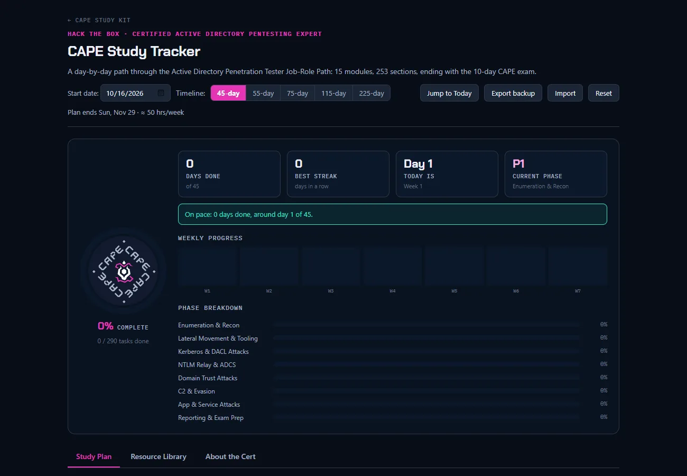
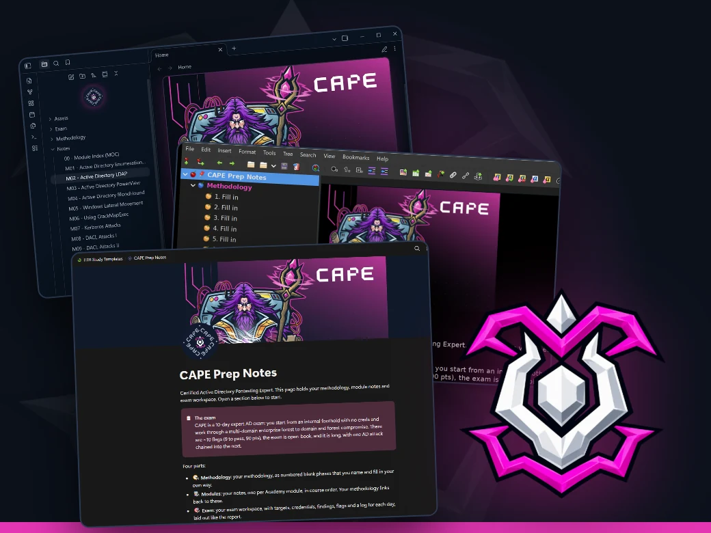
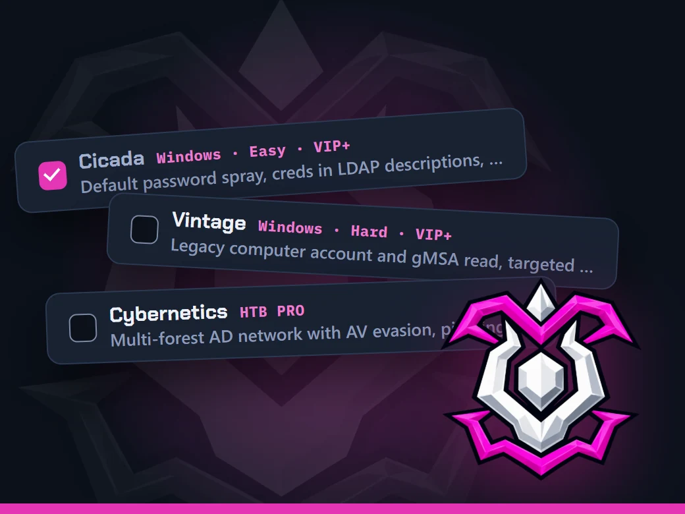
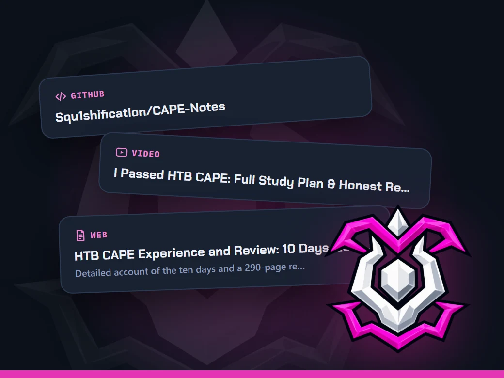

Four free tools for the CAPE, from day one to the exam report. Plan on the tracker, take your notes in the app you use, practice on real boxes, and keep every study resource in one place. All yours to keep.

Study Tracker
Every module in study order, broken into a day-by-day timeline that fits your weekly hours. Check tasks off as you go.
- Set your own pace, from 45 to 225 days
- Works offline and saves in your browser
- Export a backup whenever you want
Notes
Ready-made CAPE notes for the app you already use. The course notes, a methodology template and an exam-day workspace are already set up, so you can build your own workflow from day one.
- A note for each of the 15 modules, broken into one part per Academy section
- Blank methodology phases you turn into your own workflow
- An exam workspace laid out like the CAPE report


Practice Boxes
Hands-on practice from HTB Labs, picked for the CAPE and ordered from easiest to hardest. Tick each one off as you go.
- Picked from HTB's own prep material and reviews by people who passed
- Each one tagged with the modules it practices, plus walkthrough links
- Same progress here and in the tracker's Practice Boxes tab
Resources
Every link from the CAPE tracker on one page: the official path, videos, write-ups and GitHub repos. Search it or browse by section.
- My top picks, one for each part of your prep
- Search everything or filter by type: videos, GitHub, write-ups
- What the CAPE costs on your timeline, plan by plan
